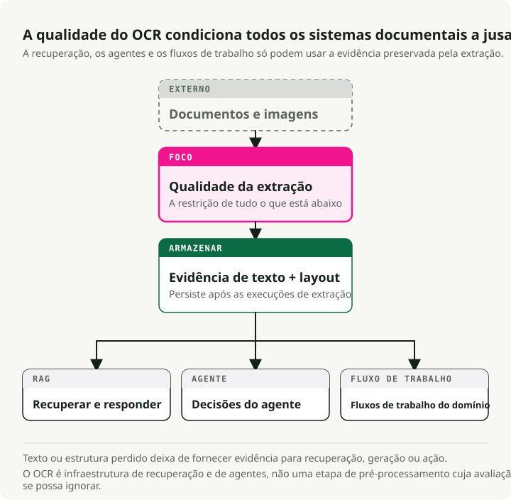
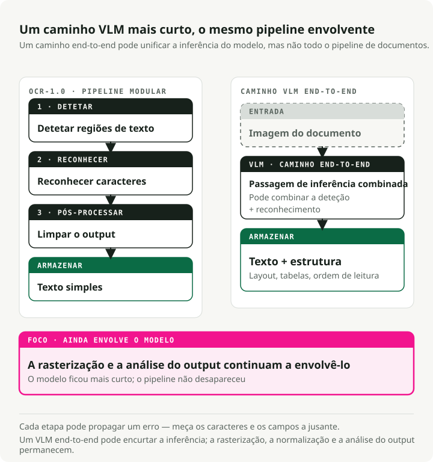
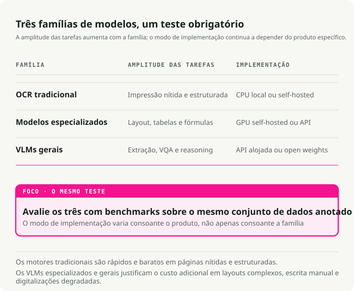
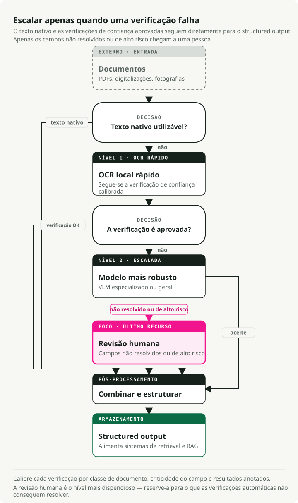

Tradução automática
Este artigo foi traduzido automaticamente a partir da versão original em inglês.
O Guia Definitivo sobre OCR em 2026: De Pipelines a VLMs
O modelo que lidera os benchmarks de OCR mais populares fica quase no último lugar quando avaliado pela qualidade aos olhos de utilizadores reais. Este campo está a evoluir tão rapidamente que os benchmarks ainda não conseguiram acompanhar essa mudança — e o OCR é agora ainda mais importante do que antes, pois todo o pipeline RAG e assistente de documentos precisa primeiro de processar o texto através dele.
Os Modelos Visão-Linguagem (VLMs) são superiores na extração de texto de documentos complexos, apresentando uma taxa de erro de caráter (CER) 3–4 vezes menor em comparação com os mecanismos tradicionais, especialmente em imagens escaneadas com ruído, recibos e texto distorcido. Em relação ao Classificação da OCR Arena no início de 2026, o Gemini 3 Flash ocupa a liderança, seguido pelo Gemini 3 Pro, Claude Opus 4.6 e GPT-5.2. Os modelos de uso geral de ponta conseguem agora superar sistemas OCR especializados em documentos reais. Modelos de código aberto como dots.ocr (1,7 mil milhões de parâmetros, 100+ idiomas) e o Qwen3-VL (2B–235B) permitem alcançar quase todos os objetivos com um custo de inferência quase nulo.
Os motores tradicionais continuam a ser a opção mais rápida e económica para documentos impressos de qualidade, mas nenhum deles é ideal em todos os cenários. Este guia aborda os benchmarks, os modelos, as métricas e a forma de implementá-los na produção.
Repositório complementar: O Desafio de OCR — uma demonstração em formato de único notebook que compara 5 tipos de documentos em 3 níveis de modelo (Tesseract → dots.ocr → Gemini 3 Flash), com o objetivo de evidenciar as diferenças significativas de qualidade e os compromissos associados aos custos.
TL;DR: O OCR-1.0 (pipelines modulares) está a ser substituído pelo OCR-2.0 (VLMs de ponta a ponta). Para digitalizações planas e limpas de texto simples, o OCR tradicional (PaddleOCR/Tesseract) continua a ser insuperável em termos de custo. Em cenários com layouts complexos, recibos, escrita à mão ou fotografias desalinhadas, são necessários VLMs. APIs como as da Frontier, como a Gemini 3 Flash, representam o estado da arte atual; modelos de código aberto como dots.ocr e Qwen3-VL São alternativas robustas de auto-hospedagem.
Por que o OCR é importante agora
Durante décadas, o OCR foi um campo periférico e pouco visível na ciência da computação. Ele digitalizava arquivos de bibliotecas, classificava correspondências e alimentava ferramentas de acessibilidade para pessoas com deficiência visual. Trabalho importante, mas de nicho. Se não se trabalhasse com gestão de documentos ou logística, era possível ignorá-lo sem problemas.
Isso mudou com a popularização dos LLMs. Cada pipeline RAG, assistente de conhecimento corporativo e agente de leitura de documentos enfrenta o mesmo obstáculo: o LLM só consegue processar texto que consiga realmente ler. De repente, milhões de PDFs, contratos escaneados, faturas e prontuários médicos tiveram de ser convertidos em texto estruturado e limpo em escala industrial. O OCR passou de um problema considerado suficientemente resolvido para se tornar um gargalo crítico para o resto da pilha de IA.

As consequências vão se acumulando. A qualidade de recuperação do seu sistema RAG é limitada pela qualidade do OCR. Se a extração distorcer uma tabela, interpretar mal uma data ou excluir um parágrafo, nenhuma estratégia avançada de divisão em blocos ou ajuste de embeddings conseguirá corrigir isso posteriormente. Uma ferramenta de análise de contratos que deixar passar uma cláusula escondida num apêndice mal digitalizado representa um risco jurídico significativo. O mesmo risco existe no processamento de faturas, na revisão de conformidade e na análise de prontuários médicos. Erros de OCR afetam diretamente todas as decisões tomadas posteriormente.
É por isso que o OCR voltou a ser um tema central das discussões. O lado da oferta (modelos mais avançados, VLMs a substituir pipelines tradicionais) representa apenas metade do problema. A outra metade reside no facto de o OCR agora ser essencial — tão importante quanto bancos de dados vetoriais ou modelos de embeddings na arquitetura moderna de IA.
O que o OCR significa na era dos modelos fundamentais
O OCR ultrapassou já a sua definição original de “converter texto impresso em caracteres legíveis para máquinas”. Atualmente, trata-se de inteligência documental: extrair texto, estrutura, tabelas, fórmulas e significado semântico de qualquer entrada visual. O campo está a evoluir de “OCR-1.0” (pipelines modulares) para “OCR-2.0”, onde um único modelo de ponta a ponta lida com todas as fases do processo.

O pipeline tradicional de OCR possui três fases principais:
- Deteção de texto: localização das regiões que contêm texto (por exemplo, CRAFT, DBNet).
- Reconhecimento de texto: conversão das regiões detetadas em sequências de caracteres (por exemplo, CRNN).
- Pós-processamento: verificação ortográfica e correção com base em modelos linguísticos.
Isso funciona bem para documentos limpos. No entanto, os erros propagam-se. Uma taxa de erro de caracteres de 2% por etapa acaba por resultar em 15–20% de falha na extração de informações em recibos.
O OCR-2.0 reduz esse fluxo de trabalho a um único codificador de visão + decodificador linguístico que lê o documento diretamente. Modelos como GOT-OCR 2.0 e VLMs como Gemini 3 Flash introduzem raciocínio contextual na tarefa. Eles conseguem inferir que “MFG: 10/24” é uma data de fabrico, e não uma data de validade. O trade-off é a velocidade: os VLMs funcionam 5–10× mais lentamente do que os motores tradicionais e, por vezes, geram texto plausível que na verdade está errado.
Uma ressalva prática: não se deixe enganar pelo rótulo “end-to-end”. Em produção, o OCR-2.0 só é unificado na fase de reconhecimento. Ainda é necessário fazer a rasterização do PDF para criar imagens, normalizar as imagens (corrigir inclinação, ajustar DPI) para garantir qualidade consistente, e analisar a saída para extrair campos estruturados a partir do texto gerado pelo modelo. O fluxo de trabalho ficou mais curto, mas não desapareceu.
| Conjunto de Dados | Ano | Tamanho do teste | Linguagens | Métrica principal | Melhor Pontuação | Saturação |
|---|---|---|---|---|---|---|
| FUNSD | 2019 | 50 documentos | Português | F1 | ~93.5% | Moderado |
| SROIE | 2019 | 347 recibos | Português | F1 | ~98.7% | Quase saturado |
| CORD | 2019 | 100 recibos | Indonésio | F1 | ~98.2% | Quase saturado |
| IAM | 1999 | ~1.861 linhas | Português | CER | ~2.75% | Moderado |
| OCRBench v2 | 2024 | 1.500 privados | EN + CN | Pontuação /100 | 63.4 | Baixo |
| OmniDocBench | 2024 | 1.355 páginas | EN + CN | Compósito | 94.62 | Baixo-a-médio |
A lacuna entre “benchmark” e “arena”
As classificações de benchmarks automatizados entram frequentemente em conflito com o julgamento humano no mundo real, e a disparidade é significativa.
| Modelo | OmniDocBench | OCR Arena ELO | Taxa de Vitórias na Arena | Intervalo |
|---|---|---|---|---|
| GLM-OCR | 94.62 | 1321 | 18.8% | Banco elevado, arena baixa |
| Gemini 2.5 Pro | 88.03 | 1569 | -- | Bom banco de testes, boa arena. |
| Gemini 3 Flash | 0,115 ED (quanto menor, melhor) | 1770 | 77.2% | Banco de teste moderado, arena n.º 1 |
| DeepSeek-OCR | Bom | 1335 | 20.2% | Banco elevado, arena baixa |
Na plataforma comunitária independente Arena de OCR, onde os utilizadores votam de forma aleatória em batalhas frente a frente, os VLMs de vanguarda saem vencedores desses confrontos. O GLM-OCR e o DeepSeek-OCR, que lideram benchmarks automatizados como OmniDocBench, fica classificado perto do final aqui.
A explicação provável é que os benchmarks automatizados dão excessiva importância a determinados tipos de documentos e formatos, enquanto os humanos valorizam a legibilidade em toda a gama de documentos reais e desorganizados. Não confie apenas nos valores dos benchmarks publicados. Faça testes com os seus próprios tipos de documentos.
Motores OCR tradicionais: ainda relevantes
Se os motores tradicionais são menos eficazes com dados complexos, por que utilizá-los? Porque são rápidos e económicos quando lidam com dados estruturados e limpos.
| Motor | Velocidade (CPU) | Precisão de Documentos Limpos | Linguagens | Tamanho do deploy mínimo |
|---|---|---|---|---|
| Tesseract 5.5 | ~0,5 s/página | 98–99% CER | 100+ | ~30 MB |
| EasyOCR | ~2 s/página | 95–97% CER | 80+ | ~200 MB |
| PaddleOCR v5 | ~1 s/página | 97–99% CER | 106+ | 3,5 MB (telemóvel) |
Tesseract: continua a ser a opção padrão para texto impresso de alta qualidade
Tesseract (v5.5.x, Apache 2.0) é o motor de código aberto mais amplamente utilizado. Ele atinge uma precisão de 98–99% em documentos impressos nítidos com resolução superior a 300 DPI, suporta mais de 100 idiomas e funciona apenas com recurso da CPU, sem qualquer custo adicional de inferência. As suas limitações também são bem conhecidas: ele apresenta desempenho fraco com escrita à mão, texto em cenários complexos e layouts intricados. No entanto, para arquivos massivos contendo texto limpo, não existe alternativa que se compare a ele em termos de custo-benefício.
EasyOCR
O EasyOCR combina um detetor CRAFT com um reconhecedor CRNN. Graças à aceleração total por GPU via PyTorch, representa uma opção rápida para prototipagem ágil e extração de texto de cenas.
import easyocr
# Three lines for complete OCR
reader = easyocr.Reader(["en"])
result = reader.readtext("receipt.jpg")
# Returns: [(bbox, text, confidence), ...]
PaddleOCR
PaddleOCR (PP-OCRv5) é o motor mais pronto para produção entre os modelos tradicionais. Uma estrutura principal PP-HGNetV2, derivada do GOT-OCR 2.0, suporta mais de 106 idiomas. A versão para dispositivos móveis compacta-se para apenas 3,5 MB, sendo ideal para implementação em dispositivos periféricos.
from paddleocr import PaddleOCR
ocr = PaddleOCR(use_angle_cls=True, lang="en")
result = ocr.ocr("receipt.jpg", cls=True)
for line in result[0]:
bbox, (text, confidence) = line
if confidence > 0.85:
print(f"{text} ({confidence:.2f})")
Os VLMs assumem o controlo: modelos especializados e gerais

Assim que se sai da zona de “varredura limpa” e se entra no mundo real (recibos tortos, rótulos de produtos desalinhados, fontes pequenas), os motores tradicionais deixam de ser eficazes.
A onda dos modelos OCR especializados
Uma onda de modelos especializados em análise de documentos surgiu entre 2025 e 2026:
- dots.ocr (1,7 B): Um modelo de código aberto que unifica a deteção de layout, o reconhecimento e a ordem de leitura. Suporta mais de 100 idiomas e supera modelos com 20× o seu tamanho em OmniDocBench.
- GOT-OCR 2.0: Um modelo unificado com 580 milhões de parâmetros que funciona numa única GPU de consumo (~4 GB de VRAM) e gera saídas em formato Markdown, LaTeX e notação estruturada.
- DeepSeek-OCR (3B): Introduziu a “compressão ótica contextual”, reduzindo os tokens visuais em 7–20 vezes. É capaz de processar mais de 200.000 páginas por dia numa única unidade A100.
- Mistral OCR v3: Um modelo proprietário otimizado especificamente para extração de texto e identificação de estrutura. Com um preço de 2 dólares por 1.000 páginas (1 dólar com a API em lote), atinge 96,6% de precisão em tabelas complexas e 88,9% em escrita à mão.
VLMs de Fronteira
Para raciocínio visual complexo ou documentos profundamente desestruturados, recorre-se aos generalistas de vanguarda:
- Qwen3-VL (Alibaba): A família líder de VLMs de código aberto para OCR (de 2B a 235B parâmetros). Possui um contexto nativo de 256K tokens, apresenta bom desempenho em condições de baixa luminosidade e imagem desfocada, e suporta 32 idiomas.
- Gemini 3 Flash (Google): Atualmente, o modelo líder na OCR Arena. Combina raciocínio de nível profissional com latência e preço no patamar do Flash ($0,50 por token/mês).
- Claude Opus 4.6 (Anthropic): Excelente na extração estruturada de JSON a partir de gráficos e no raciocínio em vários passos sobre o conteúdo de documentos.
- GPT-5.2 (OpenAI): Lida eficazmente com layouts densos de várias colunas, incluindo documentos em formato misto que combinam tabelas, texto e figuras.
Latência por nível
Em produção, a latência é tão importante quanto a precisão:
| Nível | Exemplo | Latência/página | Hardware |
|---|---|---|---|
| Tradicional | Tesseract, PaddleOCR | 0,5–3 s | CPU |
| VLM especializado | dots.ocr, GOT-OCR | 3–8 segundos | GPU |
| Frontier VLM | Gemini Flash, GPT-5.2 | 5–15 segundos | API |
Métricas: medir o que é importante
Escolha uma métrica que corresponda ao tipo de saída:
- CER e WER para texto simples. Taxa de Erro de Caractere/Word. Um bom valor de CER situa-se entre 1–2% em texto impresso. Tenha atenção: as escolhas de pré-processamento (normalização de caixa, tratamento de espaços em branco) podem alterar o CER em 5–15%, pelo que deve definir o protocolo de comparação antes de avaliar os modelos.
- EMR e Field F1 para formulários e recibos. A Taxa de Correspondência Exata é binária, o que é adequado para identificadores fiscais e valores totais. O Field F1 equilibra precisão e recuperação por tipo de campo.
- TEDS para tabelas. A Distância de Edição em Árvore, aplicada a representações em árvore de HTML, deteta desalinhamentos de células em múltiplos passos que o CER não revela.
- ANLS para VQA de documentos. A Semelhança Normalizada Média de Levenshtein atribui crédito parcial a respostas com erros leves de OCR.
Para implementações: jiwer lida com CER/WER de forma nativa, e as implementações TEDS encontram-se no repositório OmniDocBench.
Testar VLMs com OpenRouter
OpenRouter Fornece uma gateway API unificada para mais de 400 modelos de IA através de um único endpoint compatível com a OpenAI. A alternância entre o Gemini Flash, o Qwen-VL, o GPT-5.x e o Claude requer apenas a alteração de um parâmetro.
import base64
from openai import OpenAI
client = OpenAI(base_url="https://openrouter.ai/api/v1", api_key="your-key")
def extract_text(image_path: str, model: str) -> str:
with open(image_path, "rb") as f:
image_b64 = base64.b64encode(f.read()).decode()
response = client.chat.completions.create(
model=model,
messages=[{
"role": "user",
"content": [
{"type": "text", "text": "Extract all text from this image, preserving layout as markdown."},
{"type": "image_url", "image_url": {"url": f"data:image/jpeg;base64,{image_b64}"}},
],
}],
max_tokens=4096,
)
return response.choices[0].message.content
# Compare models by changing one string
models = ["google/gemini-3-flash", "anthropic/claude-sonnet-4.5", "qwen/qwen3-vl-8b"]
for model in models:
print(f"\n--- {model} ---\n{extract_text('receipt.jpg', model)[:200]}...")
Para extração estruturada (por exemplo, para recuperar campos preenchidos a partir de uma fatura), utilize response_format com um esquema JSON para que o modelo devolva uma saída validada e pronta para processamento:
import json
response = client.chat.completions.create(
model="google/gemini-3-flash",
messages=[{
"role": "user",
"content": [
{"type": "text", "text": "Extract the receipt fields from this image."},
{"type": "image_url", "image_url": {"url": f"data:image/jpeg;base64,{image_b64}"}},
],
}],
max_tokens=4096,
response_format={
"type": "json_schema",
"json_schema": {
"name": "receipt",
"schema": {
"type": "object",
"properties": {
"vendor": {"type": "string"},
"date": {"type": "string"},
"items": {
"type": "array",
"items": {
"type": "object",
"properties": {
"description": {"type": "string"},
"amount": {"type": "number"},
},
},
},
"total": {"type": "number"},
},
},
},
},
)
receipt = json.loads(response.choices[0].message.content)
Resultados de benchmark: o que os números realmente revelam
Em vez de o encaminhar para executar um notebook, apresentamos aqui os principais resultados obtidos OmniDocBench, o benchmark de análise de documentos mais abrangente disponível. Os dados são provenientes de Classificação do OmniDocBench e Artigo dots.ocr (arXiv:2512.02498):
| Modelo | Tamanho | Distância de Edição de Texto (EN) | Tabla TEDS | Geral |
|---|---|---|---|---|
| PaddleOCR-VL | 0,9 mil milhões | 0.035 | 90.89 | 92.86 |
| .dots.ocr | 3B | 0.048 | 86.78 | 88.41 |
| Gemini 2.5 Pro | — | 0.075 | 85.71 | 88.03 |
| MinerU (pipeline) | — | 0.209 | 70.90 | 75.51 |
| GPT-4o | — | 0.217 | 67.07 | 75.02 |
O resultado interessante é que o PaddleOCR-VL, com apenas 0,9 bilhão de parâmetros, lidera a classificação, enquanto o dots.ocr, com 3 bilhões de parâmetros, supera tanto o Gemini 2.5 Pro quanto o GPT-4o. O tamanho não é tudo — na verdade, a arquitetura e os dados de treino são fatores muito mais importantes neste benchmark.
🔧 Execute-o você mesmo: O Desafio de OCR é um único notebook executável que testa cinco tipos de documentos (fatura limpa, recibo amassado, formulário manuscrito, artigo académico e documento multilíngue) em três níveis diferentes (Tesseract → dots.ocr → Gemini 3 Flash), exibindo os resultados CER/EMR lado a lado juntamente com uma análise de custos.
Implementação do OCR em produção
Os sistemas OCR de produção seguem uma arquitetura em camadas. É necessário separar as cargas de trabalho da CPU (rastreabilidade e normalização) das cargas de trabalho da GPU (inferência).

💡 Nota sobre pipelines de dados: Quando é necessário converter 10.000 PDFs em formato markdown pronto para uso com LLMs num pipeline RAG, ferramentas de orquestração como o Docling são a solução ideal: elas lidam com o agrupamento em lotes, tentativas repetidas e conversão em larga escala. Para garantir qualidade na extração bruta e tomar decisões de roteamento, o padrão em camadas apresentado abaixo é o mais eficaz.
O padrão de fallback em camadas
Não utilize um VLM dispendioso num documento de texto perfeitamente limpo e simples. Implemente um sistema de roteamento baseado na confiança:
- Verificar texto embutido (Nível 0). Para PDFs, verificar se existe uma camada de texto embutida utilizando
PyMuPDFoupdfplumberantes da rasterização. Os PDFs nativos digitais (faturas, artigos académicos) costumam já ter texto perfeito — pode-se ignorar completamente o OCR. - Tente utilizar um modelo rápido (por exemplo, PaddleOCR ou Tesseract, apenas em CPU — lida com ~80% dos casos limpos).
- Avalie o nível de confiança. Se a confiança for superior a 0.90, aceite imediatamente.
- Recorra a um VLM de gama média. Se 0.70 < confiança < 0.90, direcione para
dots.ocrou Qwen3-VL-8B. - Escalar para um VLM premium ou para um humano. Se a confiança for inferior a 0.70, encaminhar para o Gemini 3 Flash / GPT-5.2 ou para uma fila de revisão por humanos.
💡 Nota sobre o cálculo da confiança: Os modelos rápidos geram nativamente uma métrica de confiança com base em pontuações softmax de probabilidade de caracteres. Em ambiente de produção, não se deve calcular uma média simples dessas pontuações em todo o documento. Em vez disso, utilize uma média ponderada por área (multiplicando a confiança de cada bloco de texto pela área da sua caixa delimitadora) para evitar que uma marca d’água mínima e pouco visível prejudique a avaliação de uma página claramente legível. Para encaminhamentos críticos (como números de identificação), aplique um limite mínimo rigoroso, de modo que qualquer campo essencial com valor abaixo de 0.90 dispare um processo de escalonamento.
def area_weighted_confidence(ocr_result):
"""Compute area-weighted confidence from PaddleOCR output."""
total_area, weighted_sum = 0, 0
for line in ocr_result[0]:
bbox, (text, conf) = line
width = bbox[1][0] - bbox[0][0]
height = bbox[2][1] - bbox[1][1]
area = abs(width * height)
weighted_sum += conf * area
total_area += area
return weighted_sum / total_area if total_area > 0 else 0
Análise de custos em escala
O ponto de viragem para a auto-hospedagem é normalmente 100K–500K páginas/mês.
| Escalar | APIs de OCR em nuvem (Mistral, Gemini) | VLM auto-hospedado (Qwen, dots) | Autosservido Tradicional |
|---|---|---|---|
| 10 mil páginas/mês | ~$20–25 | Não é rentável | Livre (CPU) |
| 100 mil páginas/mês | ~$200–250 | ~$50–100 | Grátis – $20 |
| 1 milhão de páginas/mês | ~$2,000–2,500 | ~$100–200 | Grátis – $50 |
| 10 milhões de páginas/mês | ~$20,000–25,000 | ~$700–1,000 | $200–500 |
💡 Suposições: ~1.500 tokens/página. Custos da API em nuvem com base em Mistral OCR 3 a $2 por 1 mil páginas e Gemini 3 Flash por 0,50 $/M de tokens de entrada + 3,00 $/M de tokens de saída (~2,25 $ por 1.000 páginas). A hospedagem própria de GPU pressupõe um único A100 a ~1,50 $/h. OCR tradicional em CPU de 4 núcleos.
Em escala, os VLMs auto-hospedados implementados através do vLLM com PagedAttention são muito mais económicos do que as APIs dos fornecedores. Modelos como DeepSeek-OCR Reduza ainda mais os custos comprimindo as páginas de documentos em um número menor de tokens visuais — uma redução de aproximadamente 10× nos tokens com retenção de precisão de cerca de 97%.
Gestão de erros: o problema das alucinações
Ao contrário dos erros tradicionais de OCR (erros de ortografia previsíveis estatisticamente), as alucinações de VLM geram texto contextualmente plausível, mas factualmente incorreto. Um total de recibo de “$42.50” pode tornar-se “$45.20” — sintaticamente válido, mas errado, e invisível para os verificadores ortográficos.
Exemplo concreto: Um VLM extrai um recibo com três itens ($12.00, $18.50, $12.00) e um total indicado de “$45.20”. O total real é $42.50 — o modelo transpôs os dígitos num dos itens ($18.50 → $15.20) e ajustou o total para corresponder à sua própria soma alucinada. Tudo parece internamente consistente, mas está errado.
Algumas medidas práticas de mitigação:
- Validação por checksum. Para faturas, verifique se os valores dos itens somam o total indicado e assinalhe discrepâncias para revisão humana.
- Verificações regulares com regex para datas (sem mês 13), números de telefone (quantidade correta de dígitos) e formatos monetários.
- Comparação entre itens e totais. Compare o subtotal extraído pelo VLM com a soma independente dos seus próprios itens extraídos.
- Verificação cruzada entre modelos. Submeta campos críticos a dois modelos diferentes e assinalhe divergências.
- Verificação cruzada com OCR tradicional. Realize uma passagem de OCR tradicional nos valores financeiros juntamente com o VLM. Os erros tradicionais são aleatórios, enquanto os erros do VLM são coerentes; portanto, a concordância entre ambos é um forte sinal de correção.
Principais conclusões
- Os VLMs são agora a opção padrão para dados desorganizados. Os motores tradicionais propagam erros em documentos distorcidos, degradados ou não padronizados. Os VLMs processam a página de uma só vez, alcançando um CER 3–4 vezes menor.
- Testes automatizados \(\neq\) desempenho no mundo real. Modelos que lideram nos testes OmniDocBench frequentemente falham em testes de preferência humana direta OCR Arena3. Classifique as suas pipelines por nível. Utilize ferramentas tradicionais e rápidas (Tesseract, PaddleOCR) para texto limpo, e reserve as inferências mais dispendiosas (Gemini 3 Flash, Mistral OCR) para os casos mais difíceis.
- Cuidado com as alucinações. Ao contrário dos erros tradicionais de OCR, as alucinações dos VLM geram texto plausível que consegue contornar os verificadores ortográficos.
- A versão de código aberto já é suficientemente boa para ser implementada.
dots.ocr(1,7 mil milhões) eQwen3-VLConseguir concluir a maior parte do trabalho em produção, caso a auto-hospedagem seja essencial por motivos de custo ou conformidade.
A maior parte daquilo que antes era considerado engenharia OCR — ajustes na binarização, modificação manual das caixas de delimitação de deteção, esforços para melhorar os 1% finais nas imagens impressas nítidas — já não representa o foco principal do trabalho atual. Os problemas mais interessantes hoje são o roteamento, a avaliação e a defesa contra alucinações.
Principais Conclusões
- O OCR em 2026 consiste na compreensão de documentos, e não apenas no reconhecimento de caracteres.
- O OCR clássico continua a ser útil quando a entrada está limpa, o formato é estável e a latência ou o custo são fatores importantes.
- Os VLMs são mais adequados quando a estrutura do documento, tabelas, escrita à mão, gráficos ou a extração semântica são mais relevantes do que uma saída de texto bruto.
- A métrica correta depende da tarefa subsequente: completude do texto, estrutura das tabelas, extração de campos, suporte a citações ou taxa de correção humana.
- Mantenha um plano de fallback. Nenhum modelo de OCR consegue processar de forma fiável todas as digitalizações, idiomas, layouts ou notas escritas à mão.